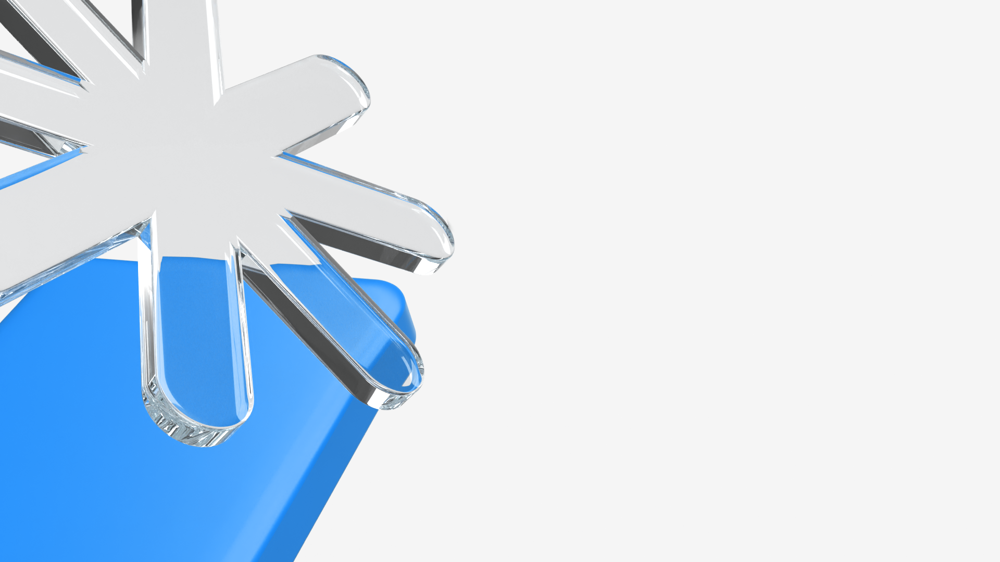

Interactive elements for presentations — terminals you can run, flows that step between contexts, code that updates as you click. Built on the same brand tokens as everything else.
Press Run to play the scripted Claude Code session. The component types each command at human cadence, then streams output. Press Reset to clear.
Step a viewer through a complete workflow with one component. Each frame is its own window — the active frame fades in, the rest dim and lift away. Use Next or click any step in the header to jump.
Audience: design + eng all-hands. Tone: confident, calm. Use the brand prop library (1 prop per slide). Open with the asterisk; close with the icons grid. Sentence case throughout.

Use the same chrome without scripting for code walkthroughs. Diff colors are built in.